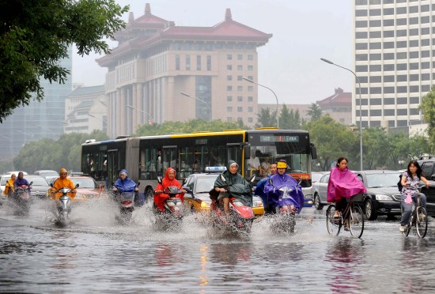
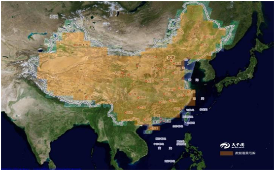

Welcome to EM-GIS 2018 Program
The 4th ACM SIGSPATIAL International Workshop on Safety and Resilience 2018
张慧教授
主题演讲：大城市智能应急管理和GIS技术.
Hung Tran和Koji Zettsu
寻找异质事件的时空共生模式进行预测

Weixin Zhai和Jean-Claude Thill
灾难情景中的社交媒体话语：致死研究2012年7月21日北京暴雨

林秀毅，小川雄一，菅谷奈津子，彰德麻原和富田仁
流地理位置数据处理用于检测救援人员在大规模灾难
王德强，郭槐槐，张辉
应急管理中的时空数据可视化：数据驱动决策方法的视角

Zhengqiu Zhu, Bin Chen, Si-Hang Qiu, Rongxiao Wang, Liang Ma and Xiaogang Qiu
The GIS-Based Approach for Optimal Design of Air Quality Monitoring Network for Management of Chemical Clusters
李丽达，张泽伟，陈建国
基于GIS的中国群体性事件案例数据库建设与时空分析
张辉教授
结束语